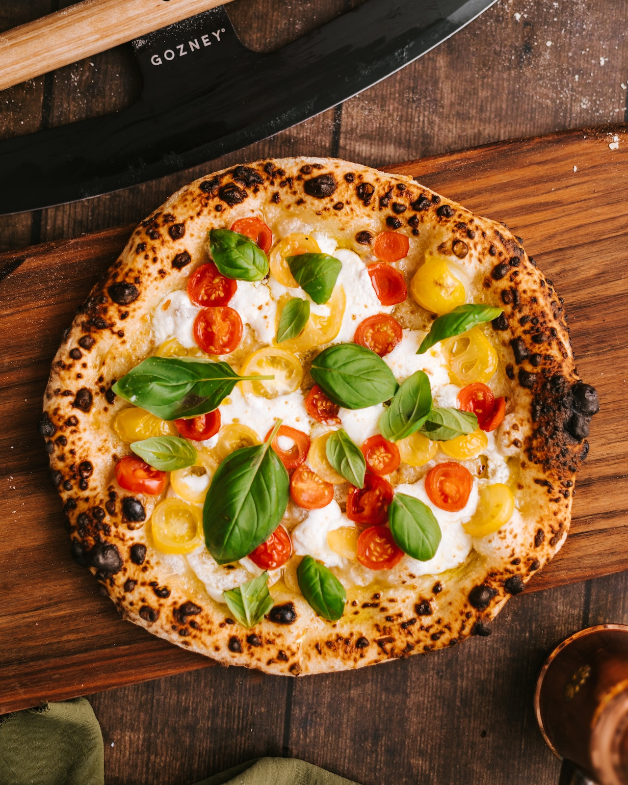

LA
LA
PIZZA
NAPOLITANA
De masa tierna y delgada pero bordes altos, es la versión propia de la cocina napolitana de la pizza redonda.
Un poco de historia
Las primeras referencias conservadas sobre pizza napolitana datan de 1715 a 1725. Vincenzo Corrado escribió a mediados del siglo xviii un valioso tratado sobre los hábitos alimenticios de la ciudad de Nápoles, donde observó que la gente tenía la costumbre de guarnecer la pizza y los macarrones con tomate. La combinación de estos productos y sus comentarios dieron de hecho inicio a la reputación gastronómica de Nápoles y atribuyeron a Corrado un papel importante en la historia de la gastronomía. Estas mismas observaciones suponen la fecha de nacimiento de la pizza napolitana, un fino disco de masa con tomate.